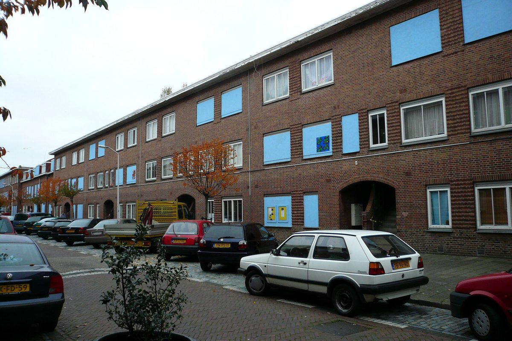

네덜란드 헤이그 트란스발 지역 열망 고장 두 주째…주민 100명 가까이 난방·온수 없이, 시는 "우리는 소유자가 아니다"

시의회 모든 정당 "시가 더 나서라" 요구에 시는 비상 조치만…연말 전 '열망에서 빠져나올 법적 방법' 담은 서한 내고 소비자시장청 독립 조사 촉구하기로
네덜란드 헤이그 트란스발 지구의 지역 열망(지역난방망)이 고장 나 헤르초흐스트라트·크리칭어르스트라트 주민들이 두 주 가까이 난방과 온수 없이 지내고 있지만, 시는 열망의 주인이 아니라는 이유로 할 수 있는 일이 비상 조치에 그치고 있다. 10월 29일 이 문제를 다룬 시의회 토론에서 이자벨 브루더르스(Isabelle Broeders) 에너지 전환 담당 부시장은 "우리는 소유자가 아니다"라며, 열망을 소유한 공급사 인바름터(InWarmte)가 문제를 풀어야 한다고 말했다. 수백 명의 세입자와 집주인이 큰 고통을 겪고 있고 지금도 100명 가까운 주민이 추위 속에 있으며, 인바름터는 수리 규모가 커서 언제 끝날지 정확히 모른다는 입장이다. 이 열망은 16년째 말썽을 빚어 왔는데, 시 집행부는 깔 때 하도급이 많았고 기록이 제대로 남지 않은 구조적 결함을 원인으로 꼽았다. 시의회 모든 정당은 시가 더 주도적으로 나서야 한다며 비상팀과 지원 창구, 독립 조사, 요금 자동이체 유예 등을 요구했다. 시는 인바름터가 내준 전기 난방기와 인근 체육관 샤워장을 제공하고 있으며, 연말 전 주민이 원하면 열망에서 빠져나올 수 있는 법적 방법과 인바름터·주택공사들과의 협의 결과를 담은 서한을 내고 네덜란드 소비자시장청(ACM)에 독립 조사를 촉구하기로 했다.
시민에너지 관점
16년째 고장이 되풀이되고 100명 가까운 주민이 겨울 문턱에서 추위에 떠는데도 시가 "소유자가 아니다"라고 말할 수밖에 없다는 것은, 지역 에너지 기반시설에서 소유가 곧 책임이자 권한이라는 점을 드러낸다. 공공이나 주민이 소유해도 설비는 고장 날 수 있다는 반론이 있지만, 적어도 주인이 지역에 있으면 수리와 투자를 언제 할지 주민과 그 대표가 직접 정할 수 있고, 위기 때 비상 조치를 넘어서는 결정을 내릴 수 있다. 한 번 깔리면 다른 공급자로 바꾸기 어려운 열망은 지역 독점이기 때문에, 처음 설계할 때부터 지자체와 주민이 지분과 의결권을 갖는 구조로 만들어야 한다. 국내에서 새 지역난방이나 마을 단위 열공급을 논의할 때도 소유 구조와 주민이 빠져나올 권리를 공급 계약보다 먼저 정해야 한다.
출처: Omroep West 2026-10-29 Merijn Kramer 원문 보기
オランダ・ハーグのトランスファール地域熱網、故障から2週間…住民100人近くが暖房・温水なし、市は「我々は所有者ではない」
市議会の全会派が「市はもっと前に出よ」と求めるも市は緊急措置のみ…年末までに「熱網から抜ける法的手段」を盛り込んだ書簡を出し、消費者市場庁に独立調査を促す方針
オランダ・ハーグのトランスファール地区で地域熱網（地域暖房網）が故障し、ヘルツォフ通りとクリツィンガー通りの住民が2週間近く暖房と温水のない生活を送っているが、市は熱網の所有者ではないとして、できることは緊急措置にとどまっている。10月29日にこの問題を取り上げた市議会の討論で、エネルギー転換担当のイザベル・ブルーダース（Isabelle Broeders）助役は「我々は所有者ではない」と述べ、熱網を所有する供給会社インヴァルムテ（InWarmte）が問題を解決すべきだとした。数百人の借家人と家主が深刻な苦境にあり、今も100人近い住民が寒さの中にいるが、インヴァルムテは修理の規模が大きく、いつ終わるか正確には分からないとしている。この熱網は16年にわたって不具合を繰り返しており、市の執行部は敷設時に下請けが多く記録も整っていなかった構造的な欠陥が原因だと説明した。市議会の全会派は市がもっと主導的に動くべきだとして、緊急チームや支援窓口、独立調査、料金の自動引き落としの猶予などを求めた。市はインヴァルムテが用意した電気暖房器と近くの体育館のシャワーを提供しており、年末までに、住民が望めば熱網から抜けられる法的手段と、インヴァルムテや住宅公社との協議結果を盛り込んだ書簡を出し、オランダ消費者市場庁（ACM）に独立調査を促すことにした。
市民エネルギーの視点
16年にわたって故障が繰り返され、100人近い住民が冬の入り口で寒さに震えているのに、市が「所有者ではない」と言うしかないことは、地域のエネルギー基盤では所有こそが責任であり権限であることを浮き彫りにしている。公共や住民が所有しても設備は壊れうるという反論もあるが、少なくとも持ち主が地域にいれば、修理や投資をいつ行うかを住民とその代表が自ら決められ、危機の際に緊急措置を超える判断を下せる。一度敷設されれば他の供給者に替えにくい熱網は地域独占であるため、最初の設計段階から自治体と住民が持ち分と議決権を持つ仕組みにすべきだ。韓国で新たな地域暖房や集落単位の熱供給を議論する際にも、供給契約より先に所有構造と住民が抜けられる権利を定めなければならない。
出典: Omroep West 2026-10-29 メレイン・クラマー（Merijn Kramer） 原文を読む
荷兰海牙德兰士瓦区域热网故障两周…近100名居民没有暖气和热水，市政府称"我们不是所有者"
市议会各党派一致要求"市政府应更多出面"，市政府只能采取应急措施…将于年底前发函说明"退出热网的法律途径"，并敦促消费者与市场管理局独立调查
荷兰海牙德兰士瓦区的区域热网（区域供暖网）发生故障，赫尔佐赫街和克里青格街的居民已近两周没有暖气和热水，但市政府以自己不是热网所有者为由，能做的仅限于应急措施。10月29日市议会讨论此事时，负责能源转型的副市长伊莎贝尔·布鲁德斯（Isabelle Broeders）表示"我们不是所有者"，认为应由拥有热网的供应商InWarmte解决问题。数百名租户和房主陷入困境，目前仍有近100名居民在寒冷中度日，InWarmte则表示维修工程量大，无法确定何时完工。这一热网16年来问题不断，市政执行机构解释称，原因是铺设时分包商众多、记录混乱造成的结构性缺陷。市议会各党派一致要求市政府更主动地介入，提出设立应急小组和援助窗口、开展独立调查、暂缓自动扣缴费用等要求。市政府目前提供InWarmte配发的电暖器和附近体育馆的淋浴设施，并决定在年底前发函，说明居民如有意愿可退出热网的法律途径以及与InWarmte和住房公司的协商结果，同时敦促荷兰消费者与市场管理局（ACM）开展独立调查。
市民能源视角
故障反复16年、近100名居民在入冬时节受冻，市政府却只能说"我们不是所有者"，这凸显出在地方能源基础设施上，所有权就是责任和权力。有人会反驳说即便由公共部门或居民拥有，设备也可能出故障，但至少所有者在本地，居民及其代表就能自己决定何时维修和投资，危机时也能作出超越应急措施的决定。热网一旦铺设就很难换供应商，属于地方垄断，因此从最初设计时就应让地方政府和居民拥有股份和表决权。韩国在讨论新建区域供暖或村级供热时，也应先于供应合同确定所有权结构和居民退出的权利。
来源: Omroep West 2026-10-29 梅赖因·克拉默（Merijn Kramer） 查看原文
The Hague's Transvaal heat network down for two weeks, nearly 100 residents without heating or hot water, as the city says "we are not the owner"
Every party on the council urges the city to take more control, but it can only offer emergency measures; a letter before year-end will set out legal ways to leave the network, and the city will press the consumer authority for an independent inquiry
A failure in the district heating network in The Hague's Transvaal neighbourhood has left residents of Hertzogstraat and Kritzingerstraat without heating or hot water for almost two weeks, yet the city says that because it does not own the network it can do little beyond emergency measures. At a council debate on the situation on October 29, Isabelle Broeders, the alderman responsible for the energy transition, said "we are not the owner" and that the supplier InWarmte, which owns the network, must fix the problem. Hundreds of tenants and homeowners are close to despair and nearly 100 residents are still in the cold, while InWarmte says the repair is extensive and it does not know exactly how long it will take. The network has had problems for 16 years, which the city executive attributes to structural faults from its construction, when many subcontractors were used and records were poorly kept. Every party on the council called for the city to take more control, asking for an emergency team and help desk, an independent inquiry and a pause on direct debits. The city is providing electric heaters supplied by InWarmte and showers at a nearby sports hall, and before the end of the year it will send a letter setting out legal ways for residents who wish to leave the heat network and the results of talks with InWarmte and the housing corporations, while pressing the Netherlands Authority for Consumers and Markets (ACM) for an independent investigation.
Citizen Energy View
When faults have recurred for 16 years and nearly 100 residents are shivering at the start of winter, yet the city can only say "we are not the owner", it shows that in local energy infrastructure ownership is both responsibility and power. Some will argue that equipment can break down even under public or resident ownership, but when the owner is local, residents and their representatives can at least decide for themselves when to repair and invest, and can go beyond emergency measures in a crisis. Because a heat network, once laid, is hard to switch away from, it is a local monopoly, and it should be designed from the outset so that local government and residents hold stakes and voting rights. When Korea discusses new district heating or village-level heat supply, the ownership structure and residents' right to leave should be settled before any supply contract.
Source: Omroep West 2026-10-29 Merijn Kramer Read the original